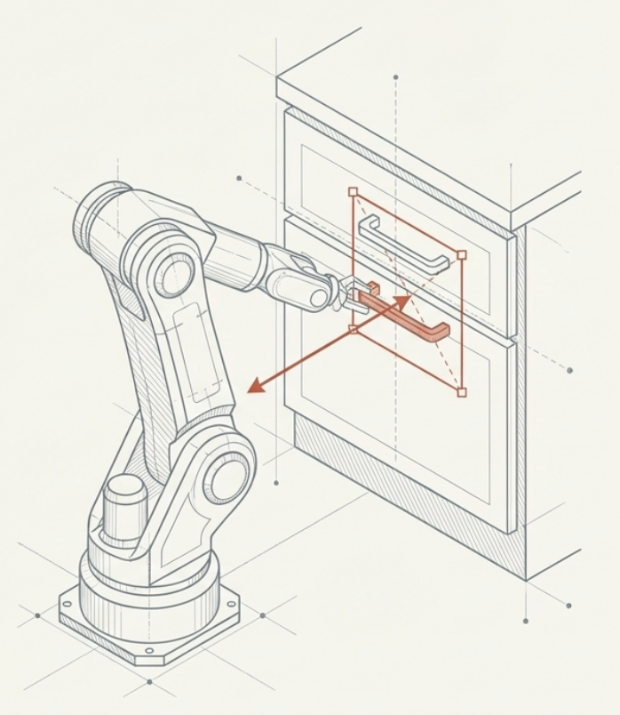
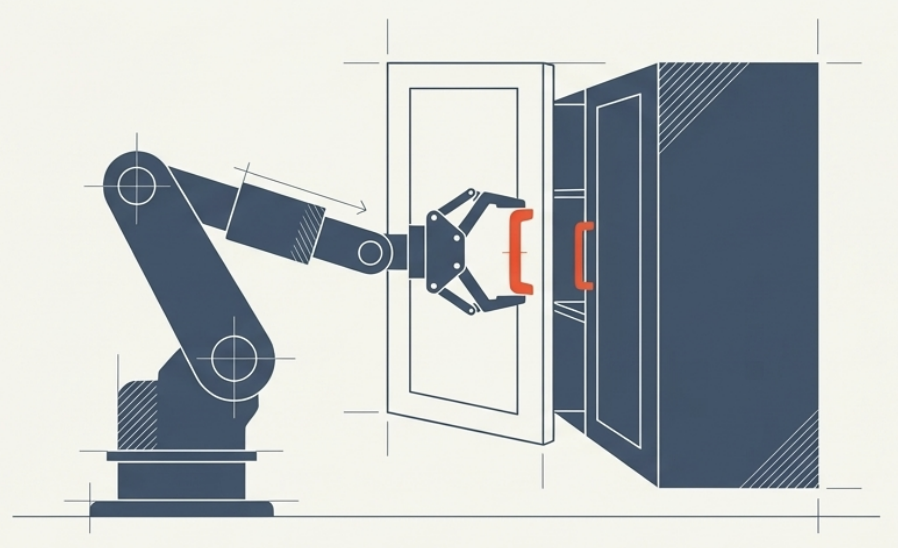
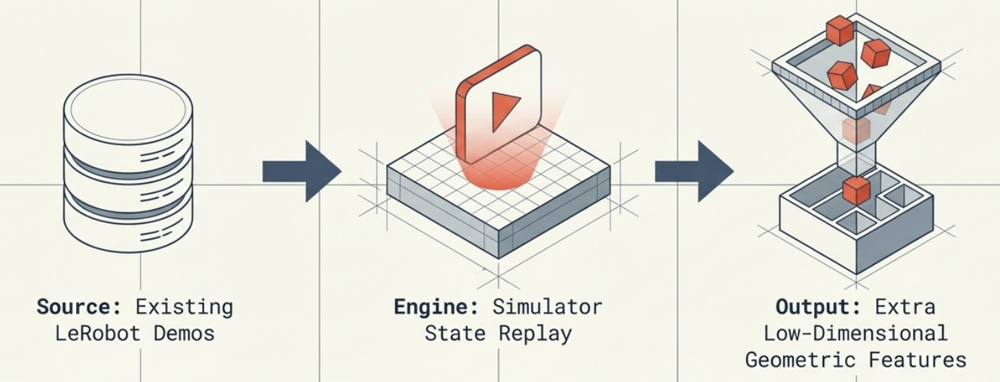
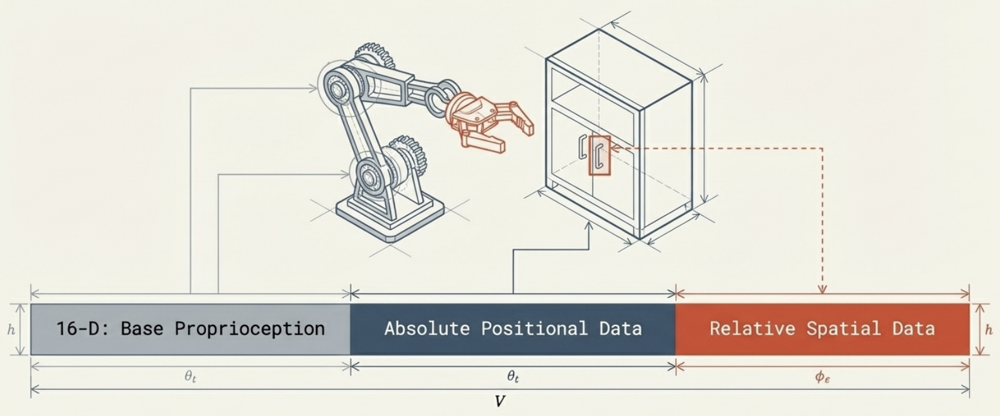

Challenge
Cabinet opening is deceptively hard: a policy must align the end-effector with a small handle, move with contact-aware precision, and pull along the correct trajectory.
Object-Aware Robotic Manipulation
In this project, the goal was to help a robot open kitchen cabinets by giving behavior cloning better spatial context. To do so, we used the RoboCasa365 benchmark to train a cabinet-opening policy, then improved results by replacing a robot-only internal state with a richer object-aware representation.


Why This Matters
Cabinet opening is deceptively hard: a policy must align the end-effector with a small handle, move with contact-aware precision, and pull along the correct trajectory.
This project uses RoboCasa365, a simulation benchmark for everyday household tasks, making the setup realistic enough to study spatial reasoning in manipulation.
The team applies imitation learning through behavior cloning, training the robot directly from expert demonstrations collected in simulation.
A policy trained only on internal robot state lacks direct awareness of the object it must interact with. Injecting object geometry closes that gap.
Pipeline
Use RoboCasa365 data for successful cabinet-opening trajectories.
Extract cabinet-handle position and robot-to-handle distance from the simulator state.
Move from a basic robot-centric input to a 44-dimensional object-aware representation.
Measure whether richer state information improves cabinet-opening behavior.
Step 01
Behavior cloning depends on the quality of demonstrations. In this project, the demonstrations come from successful task executions inside the RoboCasa365 environment.
Feature Extraction
Simulator Replay
Instead of recollecting data from scratch, this project replays simulator states from the RoboCasa365 demonstrations and queries the environment for the geometric information that matters most for cabinet opening.
This replay step makes it possible to extract handle position, object location, and robot-to-handle distance, then append those features to the policy input. That is the bridge from a robot-only observation to the final object-aware 44-dimensional state.

Interactive State Explorer
Contains internal robot information like joint positions, velocities, and controller state, but lacks explicit knowledge of the cabinet geometry.
Adds geometric task cues such as handle location and robot-to-handle distance, giving the policy direct access to the spatial facts that matter for cabinet opening.
Reference Figure
This figure grounds the interactive explanation above in the actual project artifact, showing how the richer state representation captures task-relevant geometry.

Takeaway
Representation Shift
Re-processing the simulation data let the team recover spatial features that were already latent in the environment but missing from the policy input.
Practical Impact
When the policy knows where the handle is and how far away it is, the cabinet-opening task becomes easier to ground in the physics of the scene.
Broader Lesson
The project highlights a classic robotics lesson: learning algorithms only perform as well as the information we expose to them.
Project Briefing